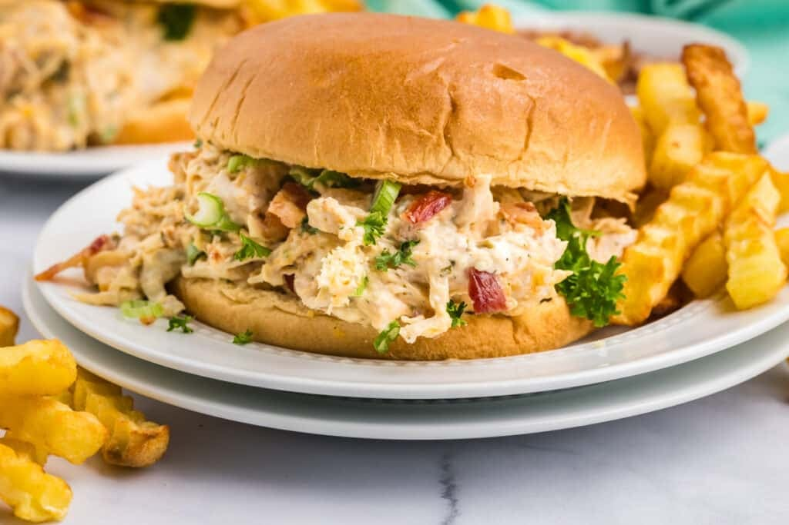

A chicken ranch sandwich is a delicious meal made with juicy chicken, creamy ranch dressing, and crispy bacon piled high on a warm, toasted bun. You can prepare this classic favorite using tender grilled chicken breast or shredded rotisserie chicken coated in savory spices and melted cheese like cheddar or pepper jack. Fresh additions like crisp lettuce, ripe tomato slices, and red onion give the sandwich a wonderful crunch that balances the rich sauce. Whether you use French bread, a hoagie roll, or sliced sourdough, it makes a fast and satisfying lunch or dinner. You can try cooking a variation yourself with the Ree Drummond Ranch Chicken Sandwiches Recipe.
